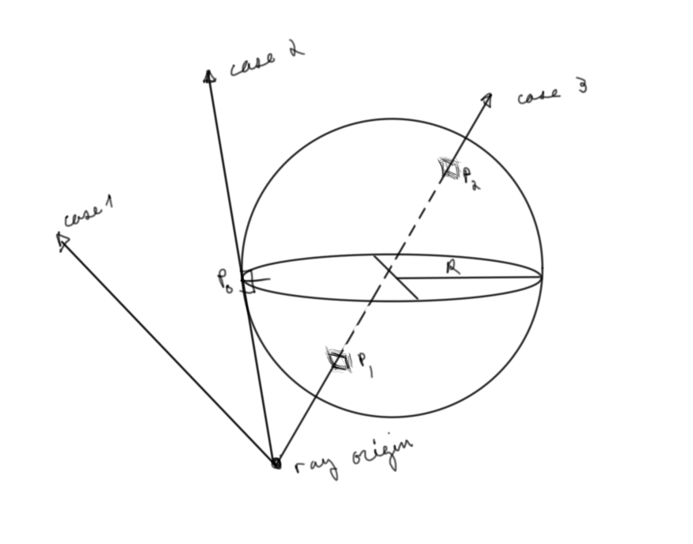
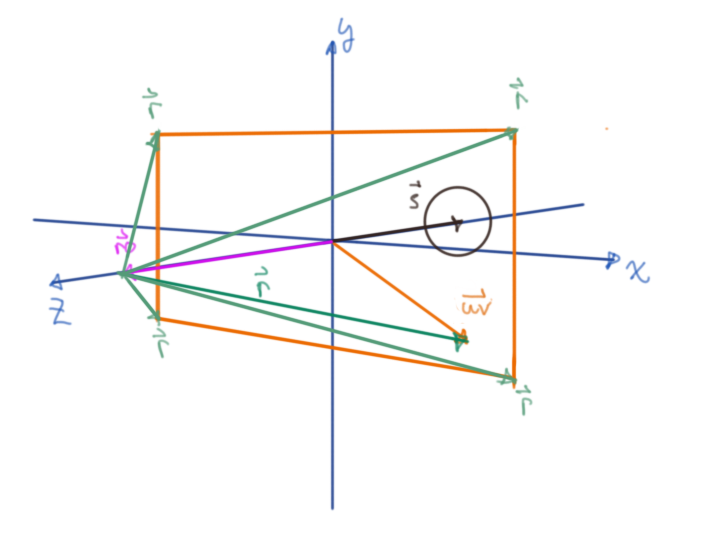
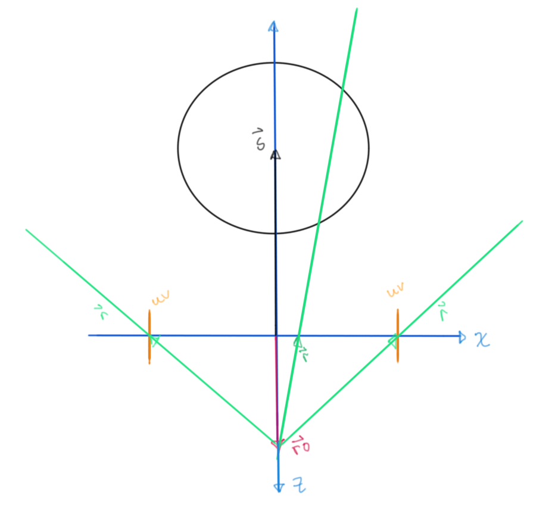
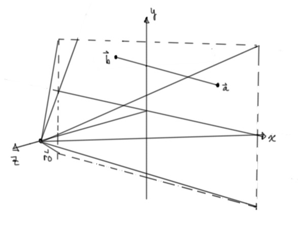
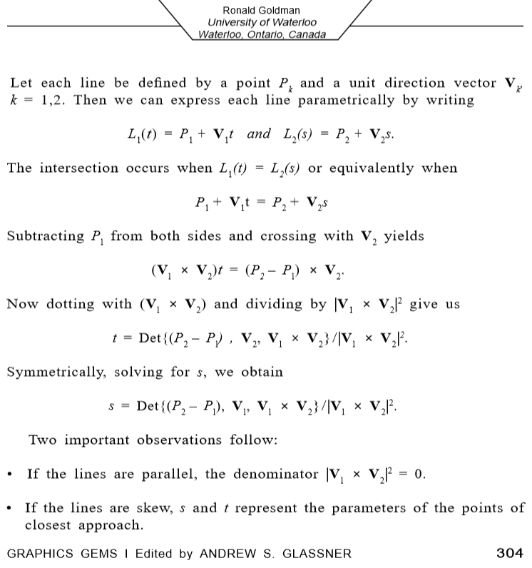

Ray-Sphere Intersection
TL;DR: Real time shader can be found here
Motivation
Some time ago I stumbled across an article on Gamasutra Gamedeveloper written by a graphics programmer at Double Fine Productions (Oliver Franzke)
In it, among other things that I hope to write articles on soon eventually, he prescribes calculating the intersection between a ray and a sphere as part of a beginner's checklist.
This is supposed to be an analytical exercise on paper, but let's use that as a the basis for a shadertoy style fragment shader for a visualization and a more complete beginner's checkmark.
Derivation
Getting something in your head is always the hardest part, so what are we trying to do exactly?
Let's draw a picture to help our thoughts. We all understand what a line intersecting with a sphere should be like intuitively, but drawing a few different lines immediately shows the possible cases.

Figure 1: The three possible ray-sphere intersections
This is a start, but… :
I often say that when you can measure what you are speaking about, and express it in numbers, you know something about it; but when you cannot measure it, when you cannot express it in numbers, your knowledge is of a meagre and unsatisfactory kind; it may be the beginning of knowledge, but you have scarcely, in your thoughts, advanced to the stage of science, whatever the matter may be. – Lord Kelvin
We need a coordinate system to express space with numbers (unless you're a tensor calculus guy, then please forgive me). If we were just doing this on paper, we would be set with our choice of any number of systems like the traditional cartesian one we learn in grade school, but how to translate this into a shader?

Figure 2: Our two paths
For the uninitiated this seems like a pretty daunting and obscure task, I know it did for me.
We need a coordinate system that includes the sphere, the ray and the screen space that has pixels. By convention and since we're working in glsl (directX uses a left handed corrdinate system) We chose a right handed coordinate system with the positive \(z\) axis coming out of the screen:
Let \(\vec{ro}\), \(\vec{s}\) and \(\vec{uv}\) be the camera, sphere, and screen space position vectors respectively.

A ray, \(\vec{r}\), from the ray origin, the "camera", that is incident with the screen can then be given by the vector expression \(\vec{ro}+\vec{r} = \vec{uv}\)

It's difficult to think about initially, but this is all done in parallel, so there is a ray for every \(\vec{uv}\).

Figure 3: All possible incident rays form a frustum
Our goal is to find where these rays that cross the screen uv-plane intersect with a given sphere. This of course has a geometric and algebraic represention.
L'algèbre n’est qu’une géométrie écrite, la géométrie n'est qu'une algèbre figurée. "Algebra is nothing but written geometry, geometry nothing but figured algebra – Sophie Germain
Algebraically, this will be where the equation of the sphere is equal to the equation for the ray. Geometrically, this will be two distances away from the ray origin within certain geometrical constraints. Let's start with the geometrical one as it's maybe more intuitive (although slightly more work):
Looking at a zx-plane cross section, we can find an intermediary distance inside the sphere using the dot product:

Figure 4: Top down view of scene
Let \(\vec{u_r}\) be the unit vector of \(\vec{r}\), defined as: $\frac{\vec{r}}{ \left\Vert \vec{r} \right\Vert } $
The relative position vector from the ray origin to the sphere is \(\vec{s} - \vec{ro}\); the projection length of this vector onto the the ray then is: \(\left\Vert \vec{s} - \vec{ro} \right\Vert \cos{ \theta }\)
This is nothing more than the dot product between \(\vec{u_r}\) and \(\vec{s} - \vec{ro}\) since \(\vec{u_r} = \left\Vert \vec{u_r} \right\Vert = 1\)
Dropping the norm symbol to save some digital chalk.
\(\vec{u_r} \cdot (\vec{s} - \vec{ro}) = \vec{u_r}(\vec{s} - \vec{ro}) \cos{ \theta} = \lambda\)

\(\xi^2 + \delta^2 = R^2\); ⇒ \(\delta = \pm (R^2 - \xi^2)^\frac{1}{2}\)
This value added to the original projection length gives us the distance to the respective incident points.
// rd is our unit vector in the direction of the ray // sphere is saved as a vec4 with it's w component acting as its radius // --- // returns vec2(further incident point, closer incident point) vec2 sphereGeometric(vec3 ro, vec3 rd, vec4 ss) { float projLen = dot(ss.xyz - ro, rd); vec3 xi = ss.xyz - ro - projLen * rd; float xiLen = length(xi); vec2 intersectDistances = vec2(0.); if(xiLen < ss.w) { float lambda = sqrt(ss.w * ss.w - xiLen * xiLen); intersectDistances = vec2(projLen + lambda, projLen - lambda); } return intersectDistances; }
This can be visualized in a shader if this distance is normalized according to longest and shortest incident rays, so we don't even need the vector valued position, just these simple distance values.
That was a lot of drawing for so little return. The algebraic approach is much cleaner:

The fundamental notion of a sphere (or circle or whatever dimension sphere thingy) is that the relative position length between its center and any point on its surface must be its radius. Written in vector notation with a little manipulation using properties of dot products, we can massage this into a quadratic equation in terms of the unknown incident distance \(\ell\).
vec2 sphereAlgebraic(vec3 ro, vec3 rd, vec4 ss) { float a = 1.; float b = dot(ro - ss.xyz, rd); float ro2sphere = length(ro - ss.xyz); float c = ro2sphere * ro2sphere - ss.w * ss.w; vec2 intersectDistances; float discriminant = sqrt(b * b - c); // complex solutions --> no intersection if(discriminant < 0.) { intersectDistances = vec2(0., 0.); } intersectDistances = vec2(-b + discriminant, -b - discriminant); return intersectDistances; }
The last bit of effort to give a shader visualization is to derive an equation for a line-line intersection in three dimensions which is surprisingly harder than the two dimension version we all learn in gradeschool. As usual, we consider the thing we're trying to do with respect to our ray setup: 
Looking at the same set up from a different point of view for some given ray:

This is a distance field from the line segment. We can mimic a ray by making this rapidly get bigger and then clamping the values between zero and one.
float lineSegment(vec3 ro, vec3 rd, vec3 a, vec3 b) { vec3 u = normalize(b - a); float dotProd1 = dot(u, a - ro); float dotProd2 = dot(rd, u); float dotProd3 = dot(rd, a - ro); float len = (dotProd1 - dotProd2 * dotProd3) / (dotProd2 * dotProd2 - 1.); len= clamp(len, 0.0 , length(b - a)); vec3 p = a + u * len; return length(cross(p-ro, rd)); }
Wrapping Up
Let's put it all together in a shader:
Real time shader can again be found here
As simple as this write up ultimately is, it remains a fundamental lesson in shaders for me, hopefully it helps someone else out too. Thank you for reading.
Annex
Extras
For knowledge's sake, here are two other derivations that I came across while trying to understand this problem: Inigo Quilez's signed distance field of a capsule this seems to be the most optimized one, iq is just the man.
Here is a derivation by Ronald Goldman from the book "Graphics Gems by Andrew S. Glassner": 
Resources
- Wikipedia: Algebraic line-sphere intersection derivation.
- The Art of Code: Geometric line-sphere intersection derivation in the context of a shader.
- Scratchapixel: Geometric and algebraic line-sphere intersection derivation.
- Susakaba.net: Line segment distance field derivation (google translate is pretty amazing).
Shader Source
uniform vec2 resolution; uniform vec2 mouse; uniform float time; out vec4 fragColor; float when_gt(float x, float y) { return max(sign(x - y), 0.0); } float smin( float a, float b, float k ) { float h = clamp( 0.5+0.5*(b-a)/k, 0.0, 1.0 ); return mix( b, a, h ) - k*h*(1.0-h); } float normalizeOnRange(float a, float b, float x) { return (b - x) / (b - a); } vec2 sphereGeometric(vec3 ro, vec3 rd, vec4 ss) { float projLen = dot(ss.xyz - ro, rd); vec3 xi = ss.xyz - ro - projLen * rd; float xiLen = length(xi); vec2 intersectDistances = vec2(0.); if(xiLen < ss.w) { float lambda = sqrt(ss.w * ss.w - xiLen * xiLen); intersectDistances = vec2(projLen + lambda, projLen - lambda); } return intersectDistances; } vec2 sphereAlgebraic(vec3 ro, vec3 rd, vec4 ss) { float a = 1.; float b = dot(ro - ss.xyz, rd); float ro2sphere = length(ro - ss.xyz); float c = ro2sphere * ro2sphere - ss.w * ss.w; vec2 intersectDistances; float discriminant = sqrt(b * b - c); // complex solutions --> no intersection if(discriminant < 0.) { intersectDistances = vec2(0., 0.); } intersectDistances = vec2(-b + discriminant, -b - discriminant); return intersectDistances; } float lineSegment(vec3 ro, vec3 rd, vec3 a, vec3 b) { vec3 u = normalize(b - a); float dotProd1 = dot(u, a - ro); float dotProd2 = dot(rd, u); float dotProd3 = dot(rd, a - ro); float len = (dotProd1 - dotProd2 * dotProd3) / (dotProd2 * dotProd2 - 1.); len= clamp(len, 0.0 , length(b - a)); vec3 p = a + u * len; return length(cross(p-ro, rd)); } #define SCALE (1.) #define PI (3.14159) void main() { vec2 uv = SCALE * 2. * gl_FragCoord.xy/resolution.xy - 1.; uv.x *= resolution.x / resolution.y; vec2 mousePos = SCALE * 2. * mouse.xy / resolution.xy - 1.; mousePos.x *= resolution.x / resolution.y; mousePos.y += 2.; // ray setup vec3 uv3d = vec3(uv, 0.); vec3 ro = vec3(0., 0., 2.); vec3 ray = uv3d - ro; vec3 rd = normalize(ray); // ray sphere intersection stuff vec4 sphere = vec4(0., 0., -5, 2.); vec2 intersectionDistances = sphereGeometric(ro, rd, sphere); //vec2 intersectionDistances = sphereAlgebraic(ro, rd, sphere); // normalization float ro2sphere = length(sphere.xyz - ro); // shortest length float roTangent = sqrt(ro2sphere * ro2sphere - sphere.w * sphere.w); // longest length float normalizedIntersectionDistances = clamp(when_gt(intersectionDistances.x, 0.) * normalizeOnRange(ro2sphere - sphere.w, roTangent, intersectionDistances.y), 0., 1.); // line segment stuff vec3 a = vec3(2. * mousePos.x, 2. * mousePos.y, sphere.z + 2.); vec3 b = sphere.xyz; vec3 abDir = normalize(b - a); vec2 lineSegmentIntersectionPoints = sphereGeometric(a, abDir, sphere); float lineSegmentFrontHalf = lineSegment(ro, rd, a, a + abDir * lineSegmentIntersectionPoints.y); lineSegmentFrontHalf = clamp(30. * lineSegmentFrontHalf, 0., 1.); // to mask line segment behind sphere float mask = clamp(1. - 25. * normalizedIntersectionDistances, 0., 1.); float lineSegmentBackHalf = (1. - mask) + mask * lineSegment(ro, rd, a + abDir * lineSegmentIntersectionPoints.x, a + normalize(b - a) * 10. * lineSegmentIntersectionPoints.y); lineSegmentBackHalf = clamp(30. * lineSegmentBackHalf, 0., 1.); vec3 col = (1. - lineSegmentFrontHalf) * vec3(.95, .2, .88) + (1. - lineSegmentBackHalf) * vec3(.95, .2, .88) + vec3(lineSegmentFrontHalf * lineSegmentBackHalf * normalizedIntersectionDistances); fragColor = vec4(vec3(col), 1.0); }